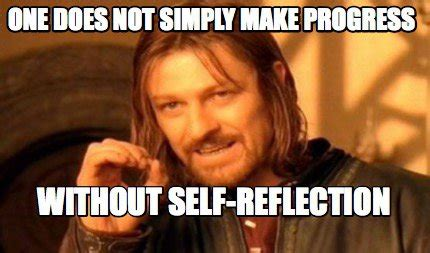

I'm not sure if what I learnt about myself was surprising as I had ideas about myself confirmed. I knew that if I didn't pick up something straight away I would immediately think I wouldn't be able to do it. Because I had the feeling that I would respond that way before the course, I worked really hard to keep going.
I realised my concentration was really hard to maintain. Especially when I had no idea how to fix things. It's been a long time since I've had to learn something new and address it every day. But I could easily do styling for ages and not be aware that time had passed.
I discovered I really don't mind asking for help and letting people know where I'm stuck. I think my last job really encouraged asking for help when you didn't know something in order to make sure things were right before they were actioned. Which has been great to see that carry over with my learnings.
I'd say that they're almost like a moral compass. I think they need to be communicated well, and is a way to make sure people are able to connect on a deeper level of understanding. Self awareness is probably the key one for me, as you need to be close to knowing your strengths and weaknesses, and how better to communicate and collaborate with a range of different people. It's also a key factor in knowing how to pick yourself up when you've hit a wall and knowing how to help others if they've hit a wall as well.
Being able to define your values is so important because then you're able to know when you feel like your boundaries or what you hold importance in is being compromised. It's also a great way to start off working with someone new, so they're aware of what you value, and you can be aware of theirs.
💖  💖
Just how nice it was to get back into the habit of writing down my thoughts, it was something that I used to do a lot, so it was nice to be doing it again. I also think it's a great way to process feelings and experiences.
I think clarifying my values probably took the longest to do as they were all quite mangled in my head. It felt really great to be able to articulate what I value, and felt like it would be easier to share with people moving forwards. I was also a bit nervous about doing the looping exercises, just because I felt a little nervous about speaking to someone new for the first time. I've done looping before, but not through Zoom so it was a little different.
I think it's to give the students really vaulable life skills on top of great technical skills. It helps with problem solving within yourself and with your code. It makes me so excited that this is part of the study and I wish all other places of learning did this as well. I think the core work lays out a really good foundation (eh!) to prepare us for bootcamp as we will continue to be challenged.
Not at all, I love reflecting, and I'm quite an introspective person to begin with. Doing all of the core work means that we will all have a similar way of approaching feedback and working when we begin bootcamp. It'll make it a lot easier to be on the same page. I think especially with everyone being a bit more self aware, it will make group work a lot easier to do and should make problem solving quicker.